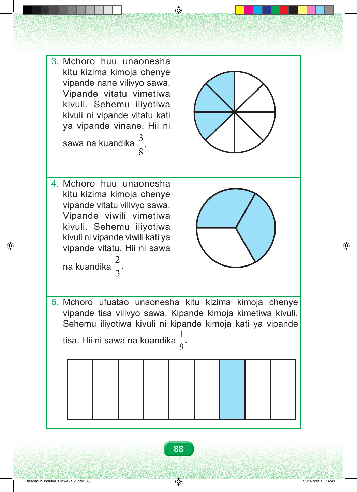

3. Mchoro huu unaonesha kitu kizima kimoja chenye vipande nane vilivyo sawa. Vipande vitatu vimetiwa kivuli. Sehemu iliyotiwa kivuli ni vipande vitatu kati ya vipande vinane. Hii ni 3 sawa na kuandika . 8 4. Mchoro huu unaonesha kitu kizima kimoja chenye vipande vitatu vilivyo sawa. Vipande viwili vimetiwa kivuli. Sehemu iliyotiwa kivuli ni vipande viwili kati ya vipande vitatu. Hii ni sawa 2 na kuandika . 3 5. Mchoro ufuatao unaonesha kitu kizima kimoja chenye vipande tisa vilivyo sawa. Kipande kimoja kimetiwa kivuli. Sehemu iliyotiwa kivuli ni kipande kimoja kati ya vipande 1 tisa. Hii ni sawa na kuandika . 9 88 Hisabati Kundirika 1 Mwaka 2.indd 88 23/07/2021 14:43